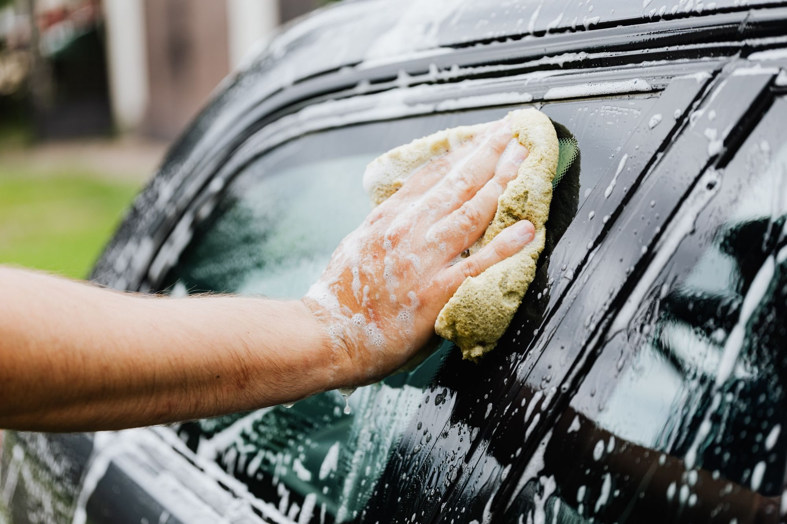
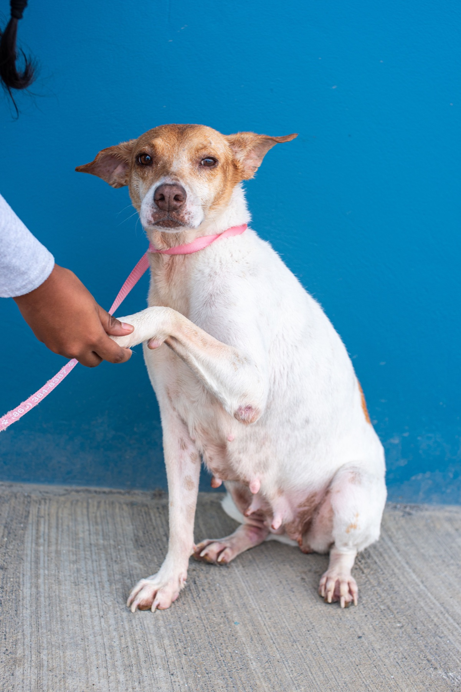
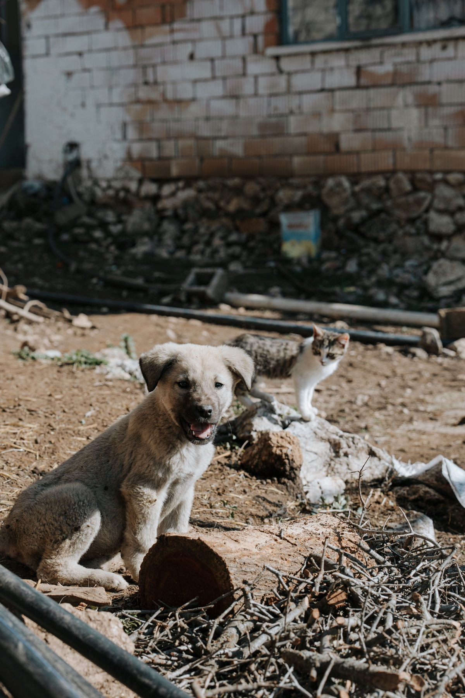

Found an Animal
If you've found an animal in Houston, start with the clearest next step based on species, condition, and urgency.
Happy's Foundation
Connecting Houston's animal-welfare community to create meaningful change for animals and people.

If you've found an animal in Houston, start with the clearest next step based on species, condition, and urgency.

Happy's Foundation is building a more connected Houston animal-welfare network through research, resource mapping, and practical coordination.

There are many ways to help, from direct animal support to partnerships, outreach, and future local services.

Quality Service. Meaningful Work.
Explore Happy's developing local services, from tutoring to car care and property maintenance.
Explore Services
Stronger Connections for Animals.
We're exploring ways to connect organizations, volunteers, and community resources to make animal welfare support easier to find.
Explore PartnershipsFind Your Place at Happy's.
Join Happy's services team. We're developing paid opportunities in local services for people ready to learn and grow.
Explore Opportunities
Every Connection Matters.
Support Happy's Foundation as we develop resources and connections for animals and the people helping them.
Support the FoundationThey can’t ask.
We don’t wait.